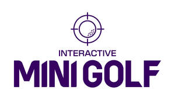

Trade Mark Journal No.2025/027 4 July 2025
UK00004225280 26 June 2025 (9,28,35,37,38,41,42)

- Class 9
- Computer software for entertainment; interactive multimedia software; interactive entertainment software; interactive video software; computer games software; electronic game software; video game software; augmented reality game software; virtual reality game software; computer programs for the representation of three-dimensional environments; computer software to enable the transmission of photographs and videos to mobile telephones; software for scoring; video display software; software for processing images, graphics, audio, video and text; mobile applications; downloadable application software; analytics software; customisation software; management software; platform software; computer hardware; virtual reality hardware; augmented reality hardware; smartboards; screens; visual display screens; interactive graphics screens; projectors; amplifiers; speakers; interactive touch screen terminals; computers; data processing equipment; apparatus for recording, transmission or reproduction of sound or images; information technology and audio-visual, multimedia and photographic devices; cameras; photo booths; electronic photo and video albums; downloadable digital photos; instruments for producing photographs and videos; photographic apparatus and instruments; audio and video shorts in the nature of downloadable recordings; video graphics for electronic games; pre-recorded audio, video, text and graphics; mounts for cameras, screens, terminals, computers; cases for cameras, computers, screens, terminals; videocasts; audio and video receivers; audio and video processors and transmitters; audio and video apparatus; computerised game boards; electronic scoring instruments for recording the score in games; scoring apparatus, visual display units, display apparatus, all for use with computerised game boards; electronic publications; recorded content; parts and fittings for the aforesaid goods.
- Class 28
- Electronic games; automatic electronic games; games apparatus; electronic games apparatus; computer game apparatus; video game apparatus; apparatus for electronic games adapted for use with an external display screen, board or monitor; controllers for computer games; controllers for electronic games; games consoles; electronic targets for games and sports; interactive games apparatus; scoreboards for electronic games; golf games; electronic golf games; (mini) golf equipment; articles for playing electronic (mini) golf games, namely golf clubs equipped with sensors, practice mats; electronic sports games; parts and fittings for the aforesaid goods.
- Class 35
- Providing an advertising platform for others; promotion of food and beverages for others; advertising and promotion services provided in connection with electronic or interactive games; business management, advice and consultancy services relating to electronic or interactive games; compilation of business or trade information; systematising, updating, maintaining and managing data and databases in the fields of electronic and interactive games; computerised data management in the fields of electronic and interactive games; business data analysis in the fields of electronic and interactive games; development of consumer surveys; generating business reports; retail services in connection with electronic games, interactive games, games apparatus, computerised game boards, electronic scoring instruments, smartboards, screens, visual display screens, interactive graphics screens, projectors, amplifiers, speakers, interactive touch screen terminals, computers, cameras, mounts for cameras, screens, terminals or computers, cases for cameras, computers, screens or terminals; information, consultancy and advice relating to any of the aforesaid services.
- Class 37
- Maintenance, repair, servicing, upgrading of electronic or interactive game apparatus; installation of electronic and interactive game apparatus in venues; repair and maintenance of game machines and apparatus; providing maintenance and repair assistance and information to venues in connection with game machines and apparatus; information, consultancy and advice relating to any of the aforesaid services.
- Class 38
- Messaging services; transmission of short messages [sms], images, speech, sound, music and text communications between mobile telecommunications devices; providing access to platforms and portals on the internet; video and photo uploading services; telecommunications via the internet; transmission of information by data transmission; providing access to computer, electronic and online databases in connection with electronic or interactive games; transmission of electronic games to and from a computer terminal; computer aided transmission of messages and/or images; transmission of video, audio, data content, and short videos; audio, text, video and multimedia transmission services over computer and electronic communications networks; providing access to computer databases in the field of entertainment; providing telecommunication facilities that enable the sharing of photos, videos, and other audio-visual materials; providing online forums for entertainment venues; information, consultancy and advice relating to any of the aforesaid services.
- Class 41
- Entertainment; interactive entertainment services; sporting activities; educational and entertainment services in relation to sport and electronic games; entertainment by or relating to games; entertainment in the form of games; interactive game services; providing virtual reality entertainment; providing augmented reality entertainment; production of video, audio, multimedia and image recordings; publication of printed and online content; multimedia publishing; photography; photo and video editing; production, presentation, distribution of audio recordings, video recordings, music, interactive games, digital content relating to entertainment; organisation and presentation of events in relation to electronic games; arranging and conducting events for recreation purposes; provision and arrangement of entertainment, leisure, cultural and sporting activities including provision of apparatus therefor; rental of game machines and apparatus; information, consultancy and advice relating to any of the aforesaid services.
- Class 42
- Software design and development in the fields of electronic or interactive games; updating of software in the fields of electronic or interactive games; software customisation services; creation of computing platforms for third parties; bespoke software integration services; providing a platform that allows users to manage, organise and share information relating to electronic or interactive games; software as a service [saas] in the fields of electronic or interactive games; platform as a service [paas] in the fields of electronic or interactive games; provision of non-downloadable software for use in the fields of electronic or interactive games; software as a service [saas], platform as a service [paas] and the provision of non-downloadable software for supporting entertainment venues; software as a service [saas], platform as a service [paas] and the provision of non-downloadable software for the provision of statistics, information, reports, surveys and business data; provision of non-downloadable software allowing users to manage entertainment venues, guests, electronic or interactive games, consumer surveys, analytics reports and food and beverage orders; provision of non-downloadable software allowing users to customise electronic or interactive games; design of games; graphic design; design of artwork for electronic and interactive games; design and development of game software; programming of game software; design and development of augmented reality game software; design and development of virtual reality game software; rental of computer game software and programs; design and development of computer hardware for games; design and development of hardware for use in connection with electronic and interactive multimedia games; advisory and consultancy services relating to games software and hardware; technical services provided by a control centre; information, consultancy and advice relating to any of the aforesaid services.
501 Entertainment Ltd
Representative: DLA Piper UK LLP